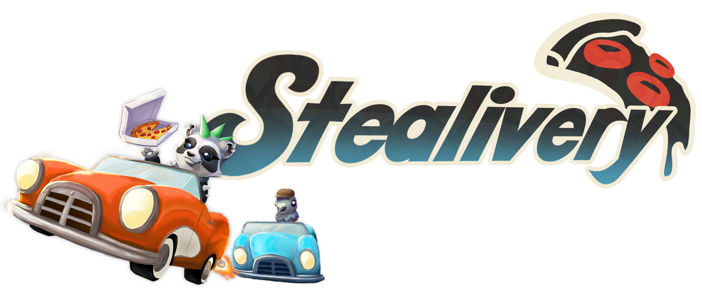
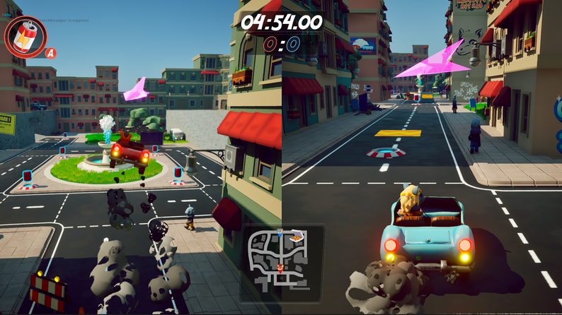
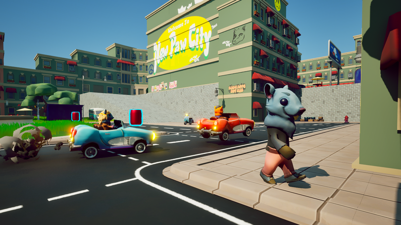

Stealivery
Unreal · Blueprints · C++

Stealivery is a two-player local co-op 3D game developed in Unreal Engine during my third semester at the S4G School for Games. The project focused on player interaction and gave me valuable experience with Unreal Engine and the fundamentals of split-screen game development.


About the Game
Stealivery is a local split-screen game about chaotic pizza delivery rivalry.
Two players compete in fast-paced, cartoonish matches across two unique game modes.
In Delivery mode, players race to deliver more pizzas than their opponent by using items and stealing each other’s orders to gain an advantage.
In Hold mode, one player steals the pizza while the other tries to take it back before the timer runs out.
With playful visuals, simple mechanics, and a focus on player interaction, Stealivery turns friendly competition into frantic fun.
The Project
This project was developed during our third semester at S4G School for Games over the course of 10 weeks by a team of eight people.
Tools
Development:
- Unreal Engine (5.5)
- Visual Studio
- Perforce
Management:
- Trello
- Google Workspace
Responsibilities
I was the sole programmer on the project, responsible for most of the technical work. This included coding the game and managing general tasks within Unreal Engine. Additionally, I implemented the user interface as well as various animations and visual effects. Since we did not have a producer, I also took on some of the production responsibilities.
Learnings
Through this project, I gained hands-on experience with Unreal Engine and the fundamentals of split-screen game development. I also strengthened my ability to collaborate effectively within a team and to balance multiple responsibilities.
Highlights
You can download the source files here.
Team
The team consisted of eight people: one programmer (myself), two designers, and five artists.